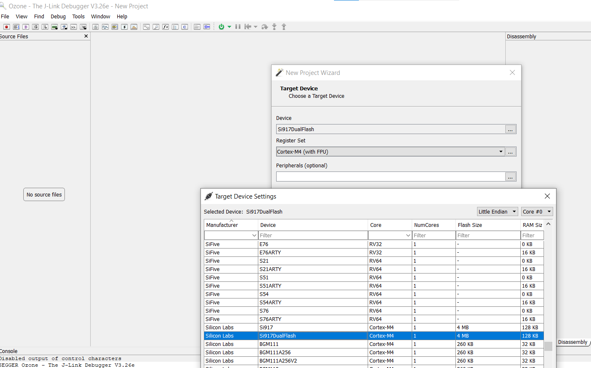

Ozone Environment Setup for a SiWx917 SoC Device
Auto detection of SiWx917 SoC device in Ozone is not enabled.
Follow the steps to manually configure the SiWx917 SoC with Latest Ozone Debugger.
Steps to Configure the SiWx917 SoC on the Ozone Debugger
Update the JlinkDevices.xml and ELF files found in the Matter Artifacts page.
Download the JLinkDevices.xml file and copy it in your Ozone installation path shown in this JLinkDevices folder. If there is no JLinkDevices Folder, create a JLinkDevices folder and copy the JlinkDevices.xml file.
In the
JLinkDevicesfolder, create aDevicesfolder and then create a sub-folder namedSiliconLabs.Download the ELF file (Flash driver) and copy it in the created
SiliconLabsfolder.
Launch Ozone. The SiWx917 Dual Flash SoC device should be visible in the Device field’s selection list.

If the above steps are successful, you can download and flash the Matter application